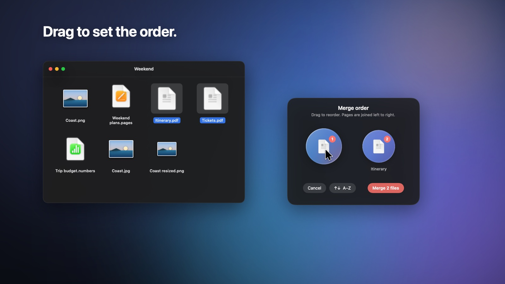

How to merge PDF files on a Mac
Tickets, invoices, scans or application forms often need to become one PDF. Here is how to merge them on your Mac and decide the order, without sending private documents to a website.

With Bubbleshift
- Select the PDFs (and images, if you like) in Finder and start dragging them.
- Tap ⌘ Command while dragging and drop on Merge.
- In the order panel, drag the files into the order you want, or press A–Z to sort them by name.
- Click Merge. One combined PDF appears beside the first file.
With what macOS already has
Open the first PDF in Preview, show the sidebar with View → Thumbnails, then drag the other PDFs into the sidebar where their pages should go, and save. It works, but is fiddly with many files.
Why use Bubbleshift for this
You can merge straight from Finder, mix PDFs and photos, and set the order visually before anything is written. Your original files are never changed.
Questions
Will merging change my original PDFs?
No. Bubbleshift writes a new PDF and leaves the originals as they are.
Can I merge images into a PDF too?
Yes. Photos and screenshots become pages in the merged PDF, upright and in your chosen order.
Are my documents uploaded?
No. Merging happens on your Mac; nothing leaves it.